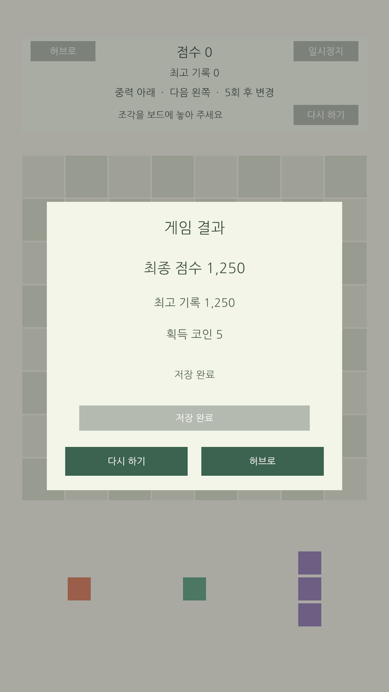
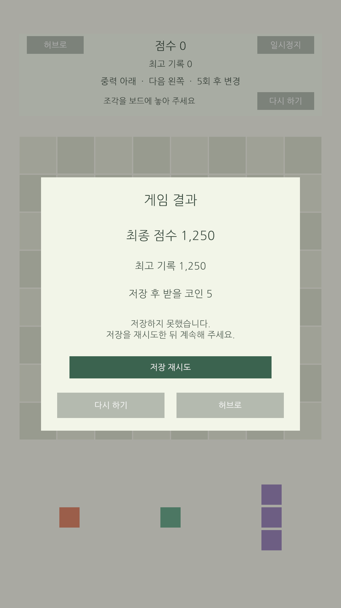

Block Gravity 결과와 저장 안내
게임 오버 결과창, 최고 기록·코인 저장, 저장 실패 재시도와 중복 지급 방지를 연결했다. 원본 Unity에도 적용하고 화면을 확인했다.
Edit Mode 213 / 213Play Mode 12 / 12원본 적용 완료
게임 오버 → 결과창 → 자동 저장 → 저장 완료 → 다시 하기 또는 허브 복귀
저장 상태에 따른 동작
| 상태 | 보상 | 가능한 조작 |
|---|---|---|
| 저장 성공 | 기록·코인·지급 이력을 함께 저장 | 다시 하기 / 허브로 |
| 저장 실패 | 예상 보상만 표시. 추가 지급 없음 | 저장 재시도. 이동 버튼과 ESC 닫기 차단 |
| 같은 결과 재시도 | 이미 저장했다면 기존 지급 기록 반환 | 코인 중복 지급 없이 계속 진행 |


화면 검증용 1250점·5코인 샘플이다. 메모리 저장소를 사용했으며 실제 플레이 코인·지급 이력·최고 기록은 변경하지 않았다.
지금 플레이하는 방법
- Unity에서 BootScene부터 Play한다.
- Block Gravity를 선택하고 게임을 진행한다.
- 게임 오버 뒤 결과창의 저장 완료를 확인한다.
- 다시 하기 또는 허브로 이동한다. 저장 실패가 표시되면 저장 재시도를 누른다.
현재 코드와 프리팹·씬 연결은 적용했다. 추가 수동 메뉴 실행은 필요 없다. 향후 리소스·UI 프리팹을 새로 추가하면 기존 부트 등록 절차를 따른다.
중복 지급을 막는 방법
판마다 고유 결과 ID를 만들고, 최고 기록·코인·지급 이력을 한 번에 저장한다. 같은 ID로 다시 저장해도 기존 기록을 반환하므로 결과창을 재열거나 앱을 다시 실행한 뒤 같은 결과를 제출해도 코인이 추가되지 않는다. 저장에 실패하면 프로필 원본을 유지한 채 같은 ID로 재시도한다.
기존 저장 파일과 호환성
저장 형식은 v2다. 기존 v0/v1의 캐릭터·설정·코인·기록을 유지하고 지급 이력을 추가한다. 최고 점수는 큰 점수도 저장할 수 있도록 64비트 정수로 확장했다.
코인은 기존 잔액 상한을 유지하며 결과창에는 실제 지급액을 표시한다. 저장 실패 상태에서 강제 종료한 미저장 판의 복원은 이번 범위에 포함하지 않는다.
확인한 내용
- 전체 Edit Mode 213개와 Play Mode 12개 통과.
- 실제 JSON 저장 왕복, 이전 형식 변환, 중복 제출, 저장 실패·재시도, 결과창 재열기와 새 판 시작 확인.
- 원본 Unity에서 부트 → 허브 → 게임 진입, 결과 프리팹 사전 로딩과 성공·실패 화면 확인.
- 원본 콘솔 오류·경고 0. 검증 후 임시 설정을 복원하고 Play Mode 종료.
Android 빌드·기기 터치는 아직 확인하지 않았다. 다음 작업은 사운드·진동 연결과 첫 플레이 안내다. 다단 연쇄는 기존 규칙 제약에 따라 별도 설계가 필요하다.